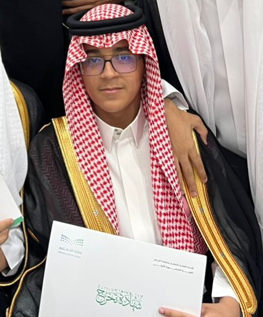
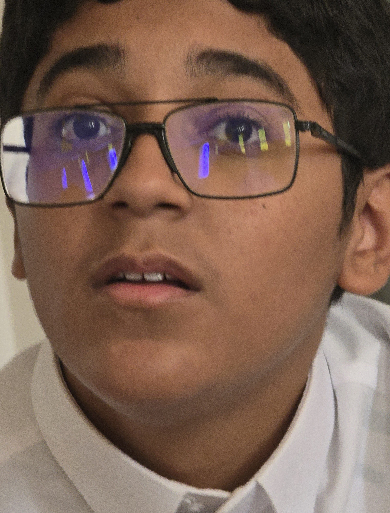

المهندس / أنس الموقر
محلل نظم بالفطرة، ومبتكر قاعدة: "لو القول فاضي ما أسجل إلا تسديدة فاخرة فينيس". أول من طبق خوارزميات الذكاء الاصطناعي لتفادي كش ملك عزوز، لكن السيرفر علّق معه 47 مرة على التوالي.
محاكي تسديدة الفينيس المضمونة (R1 + O)
حتى لو كان المرمى فاضي.. مستحيل يضغط مربع عادي!
تقنية الرؤية الاستراتيجية (وضع النظارة)
صورة الرؤية المعتمدة في الكود: anas-glasses.jpg

سجل المواجهات الكبرى: عزوز ضد أنس
توثيق رسمي ومعتمد لكل خسارة جديدة أمام الأستاذ الدولي عزوز
شهادات شرفية معتمدة من الشلة
"أنس يعتقد أن الكش ملك تحتاج تبرير أكاديمي من كلية الحاسب.. يا رجل سلم الحصان وأنت ساكت!"
"أصعب لغز في جامعة الملك سعود مو المقررات، اللغز متى أنس يشوت كورة عادية بدون استعراض R1."
"كل ما أقوله يا أنس تعال يمين، يروح يسار ويقول نظارتي عاكسة الإضاءة حق الليد."
"لو ضاعت نظارة أنس في المحاضرة، نضطر نناديه بالميكرفون عشان يدلي بدلوه في نظم المعلومات."
"طوله المدمج ميزة تكتيكية رهيبة.. ما يصيده رادار المخالفات ولا حراس المرمى في الفيفا."
"سويت له موقع كامل على حسابه عشان نثبت للتاريخ إن عزوز يجلده شطرنج كل أسبوع!"